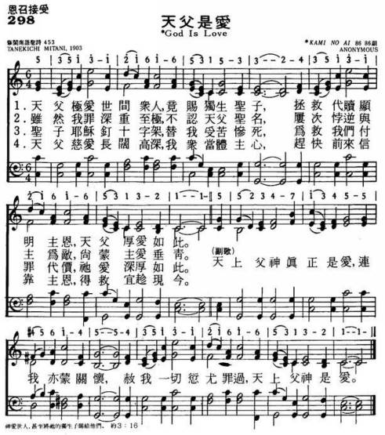

|
|
|
|
|
|
|

|
|
|
|
|

三谷種吉
Mitani Tanekichi (三谷種吉)，日本，1903
GOD IS LOVE
(天父是愛)
(MITANI
三谷種吉) 0
298
調名: KAMI NO AI (神の愛)
http://hymn.pct.org.tw/Hymn.aspx?PID=P2011081500014
1937年出版的《聖詩》也有一首源自日本聖詩的歌曲《Kimi
No Ai》（神的愛）。【圖12】這是譯自1898年三谷種吉（Tanekichi
Mitani,1868-1945）的歌詞，配上1893年美國牧師羅瑞（Robert
Lowry,1826-1899）譜寫的旋律GOD'S
LOVE來唱的詩歌。
江玉玲，〈超越東西方文化交流的藩籬──臺灣聖詩精簡回顧〉，《藝術觀點ACT》第49期，2012年1月1日，頁21。